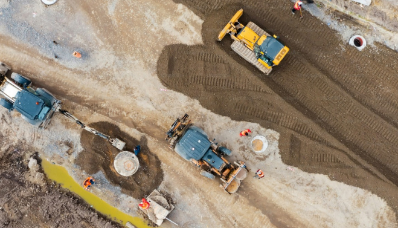
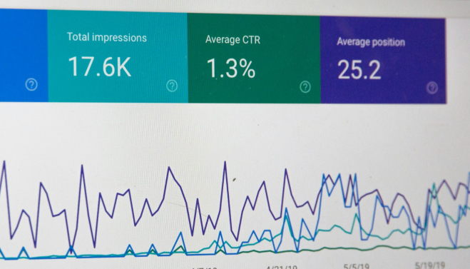

Mining
The mining industry involves finding and extracting minerals from the earth. The extracted materials are then transformed into a mineralized form that can be used for economic benefit.


Integration Of Geospatial Data
ERP systems in mining often integrate with geospatial technologies to manage and analyze spatial data related to mining operations, mineral deposits, and exploration activities.

Data Analytics And Reporting
Utilizing data analytics tools within ERP systems enables mining companies to analyze production data, track key performance indicators (KPIs), and generate reports for informed decision-making.
